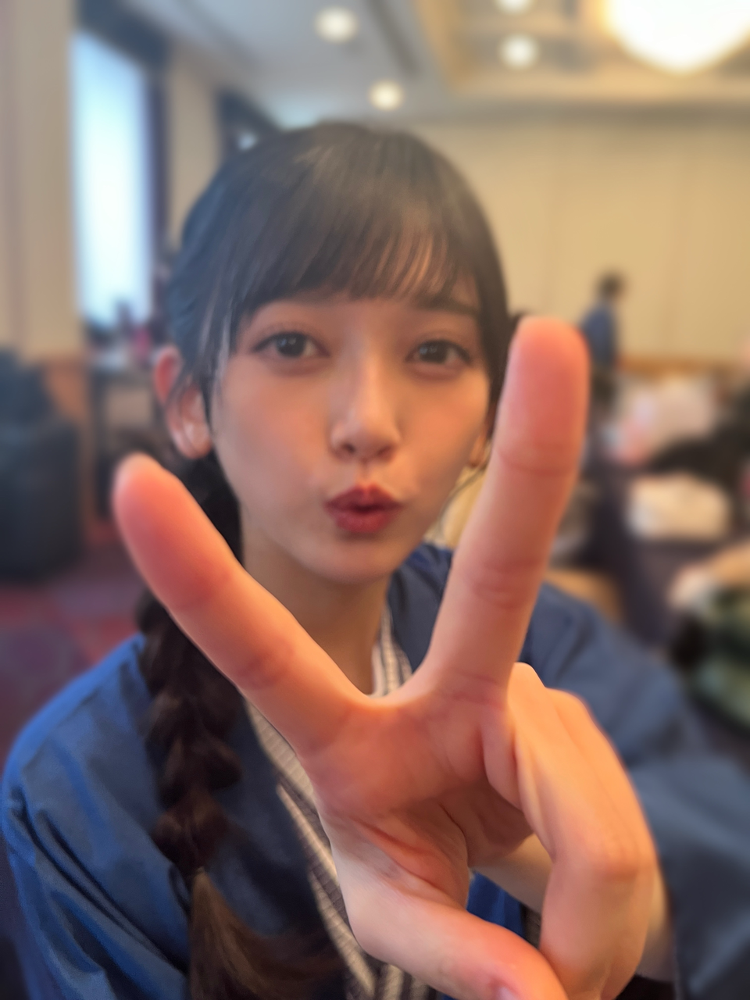
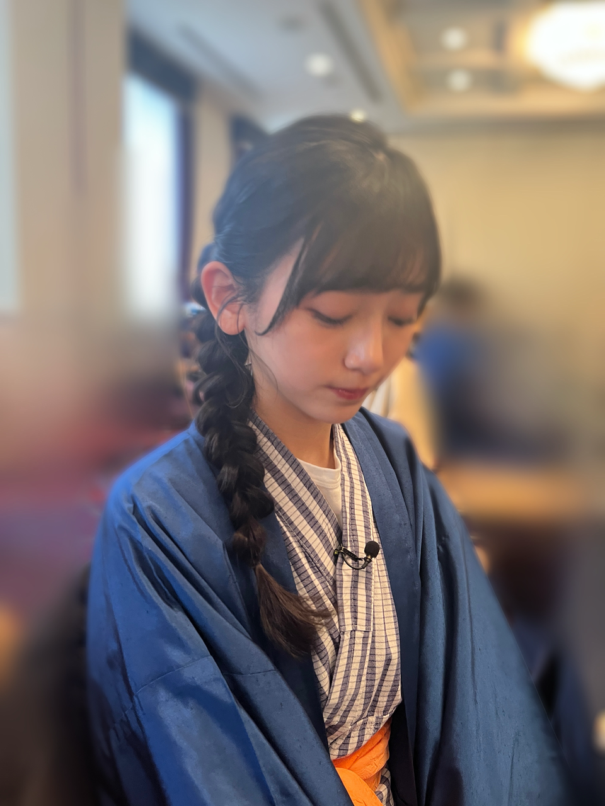
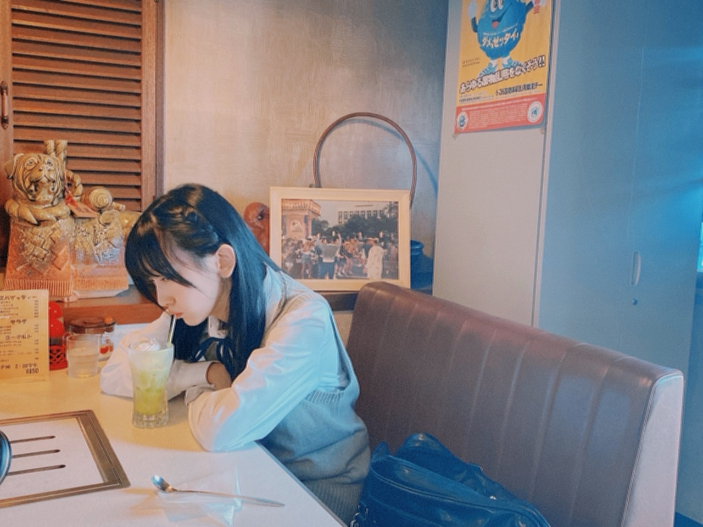

<div class="bd--edit">
<div>
<meta content="text/html; charset=utf-8" http-equiv="Content-Type"/>
<meta content="text/css" http-equiv="Content-Style-Type"/>
<title></title>
<meta content="Cocoa HTML Writer" name="Generator"/>
<style type="text/css">
p.p1 {margin: 0.0px 0.0px 0.0px 0.0px; font: 14.0px '.AppleSystemUIFont'}
p.p2 {margin: 0.0px 0.0px 0.0px 0.0px; font: 14.0px '.AppleSystemUIFont'; min-height: 22.5px}
p.p3 {margin: 9.0px 0.0px 8.0px 0.0px; font: 14.0px '.AppleSystemUIFont'}
span.s1 {font-family: 'UICTFontTextStyleBody'; font-weight: normal; font-style: normal; font-size: 14.00px}
</style>
<p class="p1" dir="auto" style='font-family:".AppleSystemUIFont"'><br/></p>
<p class="p2" style='font-family:".AppleSystemUIFont"'><span class="s1" style="font-family:UICTFontTextStyleBody"></span><br/></p>
<p class="p2" style='font-family:".AppleSystemUIFont"'><span class="s1" style="font-family:UICTFontTextStyleBody"></span><br/></p>
<p class="p1" style='font-family:".AppleSystemUIFont"'><span class="s1" style="font-family:UICTFontTextStyleBody">前回の続きという訳では無いけれど、</span></p>
<p class="p1" dir="auto" style='font-family:".AppleSystemUIFont"'><span class="s1" style="font-family:UICTFontTextStyleBody">マッシュルームの花言葉は「福音」らしい</span></p><p class="p1" dir="auto" style='font-family:".AppleSystemUIFont"'><span class="s1" style="font-family:UICTFontTextStyleBody"><br/></span></p><p class="p2" style='font-family:".AppleSystemUIFont"'><span class="s1" style="font-family:UICTFontTextStyleBody"></span></p>
<p class="p1" style='font-family:".AppleSystemUIFont"'><span class="s1" style="font-family:UICTFontTextStyleBody"><div style="font-family:UICTFontTextStyleBody"></div>トミーが撮ってくれたよ</span></p>
<p class="p1" dir="auto" style='font-family:".AppleSystemUIFont"'><span class="s1" style="font-family:UICTFontTextStyleBody">(奈央は時々自分のことをトミーって言ってる ので真似してみました)</span></p>
<p class="p2" style='font-family:".AppleSystemUIFont"'><span class="s1" style="font-family:UICTFontTextStyleBody"></span><br/></p>
<p class="p2" style='font-family:".AppleSystemUIFont"'><span class="s1" style="font-family:UICTFontTextStyleBody"></span><br/></p>
<p class="p1" style='font-family:".AppleSystemUIFont"'><span class="s1" style="font-family:UICTFontTextStyleBody">乃木坂工事中も新年会</span></p>
<p class="p1" style='font-family:".AppleSystemUIFont"'><span class="s1" style="font-family:UICTFontTextStyleBody">⊂(<span class="Apple-converted-space" style="font-family:UICTFontTextStyleBody">  </span>ᴖ ̫ᴖ)⊃ ⊂(ᴖ ̫ᴖ<span class="Apple-converted-space" style="font-family:UICTFontTextStyleBody">  </span>)⊃わーわー</span></p>
<p class="p2" style='font-family:".AppleSystemUIFont"'><span class="s1" style="font-family:UICTFontTextStyleBody"></span><br/></p>
<p class="p1" dir="auto" style='font-family:".AppleSystemUIFont"'><span class="s1" style="font-family:UICTFontTextStyleBody">せっかく浴衣なので、写真集の時の岡本くんの髪型をメイクさんに再現していただきました♨️</span></p><p class="p2" style='font-family:".AppleSystemUIFont"'><span class="s1" style="font-family:UICTFontTextStyleBody"></span></p>
<p class="p1" style='font-family:".AppleSystemUIFont"'><span class="s1" style="font-family:UICTFontTextStyleBody"><br/></span></p><p class="p1" dir="auto" style='font-family:".AppleSystemUIFont"'><span class="s1" style="font-family:UICTFontTextStyleBody"><div style="font-family:UICTFontTextStyleBody"></div>曰く、エビフライ。</span></p>
<p class="p2" style='font-family:".AppleSystemUIFont"'><span class="s1" style="font-family:UICTFontTextStyleBody"></span><br/></p>
<p class="p1" style='font-family:".AppleSystemUIFont"'><span class="s1" style="font-family:UICTFontTextStyleBody">ちょうどさっき、本人に''寂れた温泉の古いお土産屋でちゃちなキーホルダーをお揃いにする''という願望を語ってました</span></p>
<p class="p1" style='font-family:".AppleSystemUIFont"'><span class="s1" style="font-family:UICTFontTextStyleBody">ノスタルジりたいなあ</span></p>
<p class="p2" style='font-family:".AppleSystemUIFont"'><span class="s1" style="font-family:UICTFontTextStyleBody"></span><br/></p>
<p class="p2" style='font-family:".AppleSystemUIFont"'><span class="s1" style="font-family:UICTFontTextStyleBody"></span><br/></p>
<p class="p1" style='font-family:".AppleSystemUIFont"'><span class="s1" style="font-family:UICTFontTextStyleBody">(ノスタルジるというのは私の作った動詞)</span></p>
<p class="p2" style='font-family:".AppleSystemUIFont"'><span class="s1" style="font-family:UICTFontTextStyleBody"></span><br/></p>
<p class="p2" style='font-family:".AppleSystemUIFont"'><span class="s1" style="font-family:UICTFontTextStyleBody"></span><br/></p><p class="p2" style='font-family:".AppleSystemUIFont"'><br/></p>
<p class="p1" style='font-family:".AppleSystemUIFont"'><span class="s1" style="font-family:UICTFontTextStyleBody">(ง ᷄ᾥ ᷅ )ว</span></p>
<p class="p2" style='font-family:".AppleSystemUIFont"'><span class="s1" style="font-family:UICTFontTextStyleBody"></span><br/></p>
<p class="p2" style='font-family:".AppleSystemUIFont"'><span class="s1" style="font-family:UICTFontTextStyleBody"></span><br/></p><p class="p2" dir="auto" style='font-family:".AppleSystemUIFont"'>のすたるだんす。</p><p class="p2" dir="auto" style='font-family:".AppleSystemUIFont"'><br/></p><p class="p2" style='font-family:".AppleSystemUIFont"'><br/></p><p class="p2" style='font-family:".AppleSystemUIFont"'><br/></p>
<p class="p2" style='font-family:".AppleSystemUIFont"'><span class="s1" style="font-family:UICTFontTextStyleBody"></span><br/></p>
<p class="p1" style='font-family:".AppleSystemUIFont"'><span class="s1" style="font-family:UICTFontTextStyleBody">告知です！</span></p>
<p class="p2" style='font-family:".AppleSystemUIFont"'><span class="s1" style="font-family:UICTFontTextStyleBody"></span><br/></p>
<p class="p1" style='font-family:".AppleSystemUIFont"'><span class="s1" style="font-family:UICTFontTextStyleBody">2月15日発売</span></p>
<p class="p1" style='font-family:".AppleSystemUIFont"'><span class="s1" style="font-family:UICTFontTextStyleBody">『EX大衆』さん 3月号に掲載していただいております</span></p>
<p class="p2" style='font-family:".AppleSystemUIFont"'><span class="s1" style="font-family:UICTFontTextStyleBody"></span><br/></p>
<p class="p1" style='font-family:".AppleSystemUIFont"'><span class="s1" style="font-family:UICTFontTextStyleBody">是非ご覧ください🍓</span></p>
<p class="p2" style='font-family:".AppleSystemUIFont"'><span class="s1" style="font-family:UICTFontTextStyleBody"></span><br/></p>
<p class="p2" style='font-family:".AppleSystemUIFont"'><span class="s1" style="font-family:UICTFontTextStyleBody"></span><br/></p>
<p class="p1" style='font-family:".AppleSystemUIFont"'><span class="s1" style="font-family:UICTFontTextStyleBody">明日は赤えんぴつさんのLIVEだー</span></p>
<p class="p1" style='font-family:".AppleSystemUIFont"'><span class="s1" style="font-family:UICTFontTextStyleBody">早く寝なければ</span></p>
<p class="p2" style='font-family:".AppleSystemUIFont"'><br/><span class="s1" style="font-family:UICTFontTextStyleBody"></span></p><p class="p2" style='font-family:".AppleSystemUIFont"'></p><div style='font-family:".AppleSystemUIFont"'></div><br/>
<p class="p1" style='font-family:".AppleSystemUIFont"'><span class="s1" style="font-family:UICTFontTextStyleBody">またね</span></p>
<p class="p2" style='font-family:".AppleSystemUIFont"'><span class="s1" style="font-family:UICTFontTextStyleBody"></span><br/></p>
<p class="p1" style='font-family:".AppleSystemUIFont"'><span class="s1" style="font-family:UICTFontTextStyleBody">#てれふまろ</span></p>
<p class="p2" style='font-family:".AppleSystemUIFont"'><span class="s1" style="font-family:UICTFontTextStyleBody"></span><br/></p>
<p class="p2" style='font-family:".AppleSystemUIFont"'><span class="s1" style="font-family:UICTFontTextStyleBody"></span><br/></p>
<p class="p2" style='font-family:".AppleSystemUIFont"'><span class="s1" style="font-family:UICTFontTextStyleBody"></span><br/></p>
<p class="p2" style='font-family:".AppleSystemUIFont"'><span class="s1" style="font-family:UICTFontTextStyleBody"></span><br/></p>
<p class="p2" style='font-family:".AppleSystemUIFont"'><span class="s1" style="font-family:UICTFontTextStyleBody"></span><br/></p>
</div>
</div>